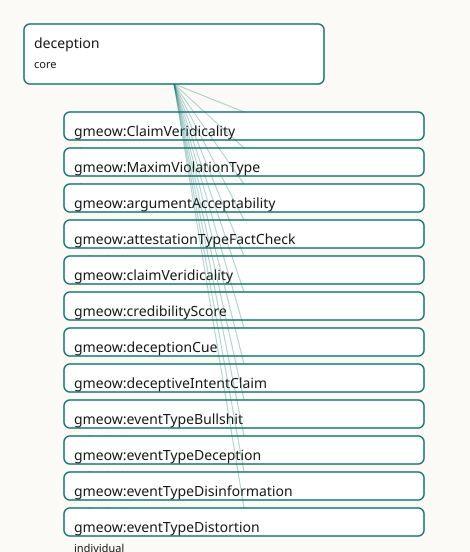

GMEOW Deception Module
- IRI: https://blackcatinformatics.ca/gmeow/slices/deception
- Tier: core
Group: core
What This Slice Covers
This slice owns 35 terms and contributes 17 mapping or projection rows. Use it when its terms match the native fact you want to preserve; use the linkage tables to see how those facts leave GMEOW for consumer vocabularies.
Dependencies
Consumers
- Graph-native epistemics of the lie (P16: core by commitment); the claim layer's refutations.
Local Map

Examples
Blame Deflection
- Source:
slices/core/deception/examples/blame-deflection.ttl - GMEOW terms:
gmeow:Event,gmeow:Organization,gmeow:Participation,gmeow:Person,gmeow:StandpointClaim,gmeow:claimModality,gmeow:claimVeridicality,gmeow:eventTemporalFrame,gmeow:eventTime,gmeow:eventType - External prefixes:
xsd
# SPDX-FileCopyrightText: 2026 Blackcat Informatics® Inc. <paudley@blackcatinformatics.ca>
# SPDX-License-Identifier: CC-BY-4.0
#
# Worked example: deception is held ≠ projected (, ). A spokesperson
# privately BELIEVES an internal misconfiguration caused an outage, but publicly
# PROJECTS that a third-party vendor did. The lie is a gmeow:Event linking the
# two StandpointClaims: gmeow:heldStandpoint (the believed claim) and
# gmeow:projectedStandpoint (the asserted-but-disbelieved one). Falsehood is not
# an isFalse boolean — it is the projected claim carrying gmeow:claimVeridicality
# gmeow:veridicalityUntrue. Nothing here needs a "deception class": ordinary
# claims, an event type, and the held/projected gap do all the work.
@prefix gmeow: <https://blackcatinformatics.ca/gmeow/> .
@prefix ex: <https://blackcatinformatics.ca/gmeow/examples/deception/> .
@prefix rdfs: <http://www.w3.org/2000/01/rdf-schema#> .
@prefix xsd: <http://www.w3.org/2001/XMLSchema#> .
# --- The outage being explained, and the two candidate causes.
ex:outage a gmeow:Event ;
rdfs:label "the March data outage"@en ;
gmeow:eventType gmeow:eventTypeDestruction ;
gmeow:eventTime "2026-03-04T02:00:00Z"^^xsd:dateTime ;
gmeow:eventTemporalFrame gmeow:temporalFrameUTCGregorian .
ex:internalCause a gmeow:Person ; gmeow:name "the on-call engineer (internal)"@en .
ex:vendor a gmeow:Organization ; gmeow:name "Northwind CDN (third party)"@en .
ex:spokesperson a gmeow:Person ; gmeow:name "Comms lead"@en .
# --- What the spokesperson privately HOLDS: the internal engineer caused it.
ex:heldClaim a gmeow:StandpointClaim ;
gmeow:vantage ex:spokesperson ;
gmeow:observedFeature ex:outage ;
gmeow:observationResult ex:internalCause ;
gmeow:observationMethod gmeow:methodExpertJudgement ;
gmeow:claimModality gmeow:unequivocal .
# --- What the spokesperson publicly PROJECTS: the vendor caused it. Asserted
# unequivocally, but UNTRUE — the falsehood is a veridicality value on the
# claim, never an isFalse flag.
ex:projectedClaim a gmeow:StandpointClaim ;
gmeow:vantage ex:spokesperson ;
gmeow:observedFeature ex:outage ;
gmeow:observationResult ex:vendor ;
gmeow:observationMethod gmeow:methodExpertJudgement ;
gmeow:claimModality gmeow:unequivocal ;
gmeow:claimVeridicality gmeow:veridicalityUntrue .
# --- The lie: an Event whose held and projected standpoints diverge. That gap
# IS the deception; the spokesperson is its participant in the deceiver role.
ex:coverStory a gmeow:Event ;
rdfs:label "the public attribution to the vendor"@en ;
gmeow:eventType gmeow:eventTypeLie ;
gmeow:eventTime "2026-03-05T09:00:00Z"^^xsd:dateTime ;
gmeow:eventTemporalFrame gmeow:temporalFrameUTCGregorian ;
gmeow:heldStandpoint ex:heldClaim ;
gmeow:projectedStandpoint ex:projectedClaim ;
gmeow:hasParticipant ex:spokesperson .
ex:deceiverRole a gmeow:Participation ;
gmeow:participationEvent ex:coverStory ;
gmeow:participationParticipant ex:spokesperson ;
gmeow:participationRole gmeow:roleDeceiver .
Terms
Classes
| Term | Label | Definition |
|---|---|---|
gmeow:ClaimVeridicality |
Claim Veridicality | The veridicality status of a claim — whether it is untrue, licensed-false (fiction, satire, sarcasm), or true. A closed value vocabulary (individuals, never su... |
gmeow:MaximViolationType |
Maxim Violation Type | A value vocabulary for conversational maxim violations (Gricean maxims: quality, quantity, relation, manner). |
Properties
| Term | Label | Definition |
|---|---|---|
gmeow:argumentAcceptability |
argument acceptability | A numerical acceptability score for an argument or standpoint claim. Solver-layer computation (Principle 12), referencing AIF (Argument Interchange Format). |
gmeow:claimVeridicality |
claim veridicality | The veridicality status of a claim — whether it is untrue, licensed-false (fiction, satire, sarcasm), or true. Non-functional: a claim may carry multiple verid... |
gmeow:credibilityScore |
credibility score | A numerical credibility score assigned to an observation or claim. Solver-layer computation (Principle 12). |
gmeow:deceptionCue |
deception cue | An observation that serves as a cue or indicator of deception in the event — a behavioural, linguistic, or evidential signal. Non-functional: a deception event... |
gmeow:deceptiveIntentClaim |
deceptive intent claim | An attributed, defeasible standpoint claim that the event was carried out with deceptive intent. The vantage is the assessor (who attributes the intent), not t... |
gmeow:heldStandpoint |
held standpoint | The standpoint claim that the deceiver actually holds to be true — the private belief or position that contrasts with the projected standpoint in a deception e... |
gmeow:implicates |
implicates | Relates a deceptive event to a proposition or entity that it conversationally or contextually implicates — the paltering mechanism, where a literally true stat... |
gmeow:maximViolationType |
maxim violation type | The type of conversational maxim violated in a deceptive event (quality, quantity, relation, manner). Solver-layer classification (Principle 12). |
gmeow:projectedStandpoint |
projected standpoint | The standpoint claim that the deceiver projects to the deceived party — the public or communicated position that diverges from the held standpoint in a decepti... |
gmeow:propagationMutationDistance |
propagation mutation distance | The number of transmission hops before a propagated deceptive claim mutates. Solver-layer computation (Principle 12). |
Individuals
| Term | Label | Definition |
|---|---|---|
gmeow:attestationTypeFactCheck |
fact check | An attestation whose purpose is to verify or refute a claim — the schema.org ClaimReview act, modelled as an attestation with type fact-check. The result is a... |
gmeow:eventTypeBullshit |
bullshit | A deception event in which the deceiver projects an unequivocal standpoint while holding the bullshit modality — indifference to the truth-value of the proposi... |
gmeow:eventTypeDeception |
deception | An event in which one or more participants intentionally or knowingly project a standpoint that diverges from the standpoint they actually hold, causing anothe... |
gmeow:eventTypeDisinformation |
disinformation campaign | A coordinated, propagated deception that aggregates many constituent deception events along a prov:wasDerivedFrom / gmeow:propagatesFrom propagation chain. At... |
gmeow:eventTypeDistortion |
distortion / spin | A deception event in which the projected standpoint sharpens, re-frames, or selectively emphasises the held standpoint — a modality shift (e.g. probable→unequi... |
gmeow:eventTypeFabrication |
fabrication | A deception event in which a false artifact (a gmeow:CreativeWork) is produced and its attested provenance is projected as genuine while the deceiver's held st... |
gmeow:eventTypeForgery |
forgery | A fabrication that mimics a specific genuine artifact — the forged work bears a gmeow:counterpartOf link to the genuine work it imitates, and when a cryptograp... |
gmeow:eventTypeImpersonation |
impersonation | A deception event in which a projected identity claim is presented as belonging to a subject other than the deceiver. Reuses gmeow:IdentityFacet machinery: the... |
gmeow:eventTypeLie |
lie / falsification | A deception event in which the projected standpoint negates the held standpoint — the deceiver communicates a proposition they believe to be false. The project... |
gmeow:eventTypeOmission |
omission / concealment | A deception event in which the held standpoint is present but no projected standpoint is offered — the deceiver suppresses a truth they hold rather than assert... |
gmeow:eventTypePaltering |
paltering | A deception event in which the projected literal claim is technically true but conversationally implicates a false conclusion P′ that the held standpoint refut... |
gmeow:eventTypeSelfDeception |
self-deception | A deception event in which the same agent fills both the deceiver and deceived roles — an avowed (conscious, articulated) standpoint diverges from a tacit (imp... |
gmeow:maximViolationManner |
maxim violation — manner | Violation of the Gricean maxim of Manner: avoid obscurity, ambiguity, prolixity, and disorder. Distortion, spin, and deliberate obfuscation violate this maxim. |
gmeow:maximViolationQuality |
maxim violation — quality | Violation of the Gricean maxim of Quality: do not say what you believe to be false or for which you lack adequate evidence. Lies, falsifications, and bullshit... |
gmeow:maximViolationQuantity |
maxim violation — quantity | Violation of the Gricean maxim of Quantity: make your contribution as informative as required, but not more so. Omissions, concealment, and paltering violate t... |
gmeow:maximViolationRelation |
maxim violation — relation | Violation of the Gricean maxim of Relation (Relevance): be relevant. Paltering and certain forms of distraction or red-herring deception violate this maxim. |
gmeow:roleBeneficiaryOfDeception |
beneficiary of deception | An entity that benefits from a deception event, whether or not they are the deceiver — the third-party beneficiary who gains from the false belief induced in t... |
gmeow:roleDeceived |
deceived | The participant in a deception event who is induced to hold a false belief by the divergence between the projected and held standpoints. In self-deception, thi... |
gmeow:roleDeceiver |
deceiver | The participant in a deception event who projects a standpoint that diverges from what they hold true. In self-deception, this role is borne by the same entity... |
gmeow:roleDupe |
dupe | An unwitting intermediary in a deception — a participant who forwards the projected standpoint without knowing it is deceptive, acting as a conduit rather than... |
gmeow:roleSpinDoctor |
spin doctor | The participant in a distortion or spin event who reframes, sharpens, or selectively presents information to alter the inferential landscape without literally... |
gmeow:veridicalityLicensedFalsehood |
licensed falsehood | The claim is fiction, satire, sarcasm, or another form of falsehood that is socially licensed and not deceptive — the audience understands the non-truth-assert... |
gmeow:veridicalityUntrue |
untrue | The claim is not true — a statement that fails to correspond to fact. This is a frame-relative assessment (a claim may be refuted in one standpoint and unequiv... |
Linkages
- Rows: 17
- Projection profiles: -
- External vocabularies:
crminf,wd
| Source | Kind | Profile | Predicate/Relation | Target | Evidence |
|---|---|---|---|---|---|
gmeow:deceptiveIntentClaim |
equivalence | - |
skos:relatedMatch | crminf:I1_Argumentation | gmeow-deception.sssom.tsv; gmeow:eqDeception006; confidence 0.4 |
gmeow:eventTypeBullshit |
equivalence | - |
skos:relatedMatch | wd:Q1760159 | gmeow-deception.sssom.tsv; gmeow:eqDeception012; confidence 0.9 |
gmeow:eventTypeBullshit |
equivalence | - |
skos:relatedMatch | wd:Q2063516 | gmeow-deception.sssom.tsv; gmeow:eqDeception011; confidence 0.5 |
gmeow:eventTypeDeception |
equivalence | - |
skos:closeMatch | wd:Q170028 | gmeow-deception.sssom.tsv; gmeow:eqDeception007; confidence 0.7 |
gmeow:eventTypeDisinformation |
equivalence | - |
skos:closeMatch | wd:Q189656 | gmeow-deception.sssom.tsv; gmeow:eqDeception019; confidence 0.7 |
gmeow:eventTypeDisinformation |
equivalence | - |
skos:relatedMatch | wd:Q28549308 | gmeow-deception.sssom.tsv; gmeow:eqDeception023; confidence 0.6 |
gmeow:eventTypeDisinformation |
equivalence | - |
skos:relatedMatch | wd:Q7281 | gmeow-deception.sssom.tsv; gmeow:eqDeception021; confidence 0.5 |
gmeow:eventTypeDisinformation |
equivalence | - |
skos:relatedMatch | wd:Q878352 | gmeow-deception.sssom.tsv; gmeow:eqDeception022; confidence 0.5 |
gmeow:eventTypeDistortion |
equivalence | - |
skos:closeMatch | wd:Q12776523 | gmeow-deception.sssom.tsv; gmeow:eqDeception010; confidence 0.6 |
gmeow:eventTypeFabrication |
equivalence | - |
skos:closeMatch | wd:Q1332286 | gmeow-deception.sssom.tsv; gmeow:eqDeception015; confidence 0.5 |
gmeow:eventTypeFabrication |
equivalence | - |
skos:closeMatch | wd:Q18387855 | gmeow-deception.sssom.tsv; gmeow:eqDeception014; confidence 0.6 |
gmeow:eventTypeForgery |
equivalence | - |
skos:closeMatch | wd:Q1332286 | gmeow-deception.sssom.tsv; gmeow:eqDeception016; confidence 0.7 |
gmeow:eventTypeForgery |
equivalence | - |
skos:closeMatch | wd:Q693988 | gmeow-deception.sssom.tsv; gmeow:eqDeception017; confidence 0.7 |
gmeow:eventTypeImpersonation |
equivalence | - |
skos:closeMatch | wd:Q2146099 | gmeow-deception.sssom.tsv; gmeow:eqDeception018; confidence 0.7 |
gmeow:eventTypeLie |
equivalence | - |
skos:closeMatch | wd:Q4925193 | gmeow-deception.sssom.tsv; gmeow:eqDeception008; confidence 0.7 |
gmeow:eventTypeSelfDeception |
equivalence | - |
skos:closeMatch | wd:Q1602343 | gmeow-deception.sssom.tsv; gmeow:eqDeception013; confidence 0.7 |
gmeow:veridicalityUntrue |
equivalence | - |
skos:closeMatch | wd:Q13579947 | gmeow-deception.sssom.tsv; gmeow:eqDeception020; confidence 0.6 |
Guide
Deception — the lie as a structural gap, never a truth bit
Slice:
https://blackcatinformatics.ca/gmeow/slices/deception· tier: core Graph-native epistemics of the lie: held ≠ projected, standpoint-indexed, with intent kept out of the logic.
Most vocabularies flag falsehood with a boolean. GMEOW refuses (Principles 1 and 12): there
is no isFalse, no isDeceptive, and no truth datatype property anywhere in the graph.
A falsehood is a frame-relative gmeow:StandpointClaim whose claimModality is
gmeow:refuted — settled-false per a designated reference frame — and a deception is not
a verdict at all but a structural divergence: an event in which the standpoint a party
holds differs from the standpoint they project. The gap is the act (EPIC).
Three corollaries shape everything below. Intent stays out of the logic — deceptive
intent is an attributed, defeasible claim by an assessor, never entailed by the reasoner,
coexisting with its denial (Principle 9). Deception kinds are values, never subclasses —
each mechanism is one open gmeow:eventType individual (events doctrine), and the
deception-specific constraints are SHACL scoped to gmeow:eventTypeDeception
(DeceptionEventShape), never global OWL restrictions on gmeow:Event (Principle 3).
Licensed falsehood is a safety property — fiction, satire, and sarcasm are structurally
distinct from deception, so no pipeline ever "debunks" a novel.
The divergence core
gmeow:eventTypeDeception
The umbrella event kind: a participant projects a standpoint diverging from the one they
hold, inducing a false belief. A value individual on an ordinary gmeow:Event — birth,
marriage, and lie share one Event class, distinguished by gmeow:eventType alone.
gmeow:heldStandpoint · gmeow:projectedStandpoint
The two sides of the gap, both ordinary gmeow:StandpointClaims attached to the deception
event. Non-functional by design: a complex deception may hold several private positions and
project different stories to different audiences. The relationship between the pair —
negation (lie), implicature (paltering), absence (omission), sharpening (spin) — is what the
mechanism inventory below names.
gmeow:deceptiveIntentClaim
Intent as a contestable attribution: a StandpointClaim whose vantage is the assessor (not
the deceiver), carrying gmeow:confidence and gmeow:wasAttributedTo. The reasoner never
entails intent; an accusation and its denial coexist (Principle 9).
Veridicality
gmeow:ClaimVeridicality · gmeow:claimVeridicality
The veridicality status of a claim, as a value vocabulary linked by the non-functional
gmeow:claimVeridicality — multiple assessments from different standpoints coexist. This is
an assessment axis, never a global verdict (Principle 11).
gmeow:veridicalityUntrue · gmeow:veridicalityLicensedFalsehood
veridicalityUntrue is frame-relative non-truth — refuted in one standpoint, possibly
unequivocal in another. veridicalityLicensedFalsehood is the safety property: fiction,
satire, and sarcasm assert nothing because the audience understands the non-truth-asserting
frame — licensed, not deceptive (Principle 1).
The mechanism inventory
gmeow:eventTypeLie · gmeow:eventTypePaltering · gmeow:eventTypeOmission · gmeow:eventTypeDistortion · gmeow:eventTypeBullshit · gmeow:eventTypeSelfDeception
Six speech-act mechanisms, each one open gmeow:eventType value distinguished by where the
gap lives: projection negates the held claim (lie); a literally true projection implicates
a false conclusion (paltering); a held truth is never projected (omission); the projection
sharpens or re-frames — a modality shift, probable→unequivocal (distortion); the deceiver
projects certainty while holding the bullshit modality, Frankfurt's indifference to truth
(bullshit); one agent fills both roles, avowed vs tacit sub-vantage (self-deception). Each
maps to the Gricean maxim it violates.
gmeow:MaximViolationType · gmeow:maximViolationType
The Gricean classification axis — Quality (lie, bullshit), Quantity (omission, paltering),
Relation (paltering, red herrings), Manner (distortion, obfuscation) — as a closed value
vocabulary. Assigning a violation is solver-layer classification (Principle 12).
gmeow:implicates
The paltering hook: relates a deceptive event to the proposition its literally-true statement misleadingly implies. Deliberately without reasoner semantics — implicature is a pragmatics computation, not an OWL entailment (Principle 12).
Carrier deception
gmeow:eventTypeFabrication · gmeow:eventTypeForgery · gmeow:eventTypeImpersonation
Divergence borne by an artifact or identity binding rather than a bare utterance. A
fabrication invents a false gmeow:CreativeWork whose projected provenance the deceiver's
held standpoint refutes — evidenced by a failed gmeow:VerificationResult, never a truth
axiom. A forgery is a fabrication that mimics a specific genuine work
(gmeow:counterpartOf the original). An impersonation projects an gmeow:IdentityFacet
whose subject differs from the deceiver — email spoofing is impersonation with a failed
AuthenticationResult; phishing is an instance, never a taxonomy primitive.
Participant roles
gmeow:roleDeceiver · gmeow:roleDeceived · gmeow:roleBeneficiaryOfDeception · gmeow:roleDupe · gmeow:roleSpinDoctor
Open gmeow:ParticipantRole values on ordinary Participations. Self-deception is the
configuration where deceiver = deceived; the dupe is the unwitting conduit; the spin doctor
is specific to distortion events. No role implies guilt — roles are structure, intent is an
attribution.
Propagation and the per-node boundary
gmeow:eventTypeDisinformation
A coordinated campaign aggregating constituent deception events along the
prov:wasDerivedFrom / gmeow:propagatesFrom lineage spine. The
misinformation↔disinformation boundary is per-node, never a global label: at the origin
held ≠ projected (deception, roleDeceiver); at sincere intermediary nodes held ≈ projected
and the claim is merely untrue (roleDupe).
gmeow:deceptionCue · gmeow:attestationTypeFactCheck
Evidence enters as observations: a cue is a behavioural, linguistic, or evidential signal
attached non-functionally to the event — competing standpoint-indexed cue claims coexist. A
fact-check is an attestation kind (the schema.org ClaimReview act) whose result is a
VerificationResult, not a truth assertion.
Solver layer & deferred alignment
Everything that scores lives below the ontology (Principle 12): cue weighting
(gmeow:credibilityScore), propagation-chain analysis
(gmeow:propagationMutationDistance), argument evaluation (gmeow:argumentAcceptability,
referencing AIF), implicature derivation, and maxim classification. The slice carries the
structure those solvers read; it asserts no verdicts. Alignment is by reference — schema.org
ClaimReview via the fact-check attestation kind, AIF for argument scores — with SSSOM rows
deferred to the alignment window. DL-cleanliness is by construction: simple object
properties only, no transitivity, chains, or inverses (Principle 3).
Bridge: aboutness (kernel)
gmeow:veridicalityLicensedFalsehood (fiction, satire, sarcasm) is the
special case where the kernel's aboutness axis meets veridicality: a fictional
carrier enacts its content (gmeow:hasAboutness gmeow:aboutnessEnacts)
while asserting nothing — enactment without assertion is licensed, not
deceptive. The bridge is documentation only, deliberately: no axiom couples
hasAboutness to veridicality or standpoint modality, so enactment never
entails assertion (and text about deception is never inferred to deceive).
Dependencies
Depends on kernel, events (the Event/eventType machinery), observations (cues), and
attestation (fact-checks, verification results). Consumed by the claim layer's refutation
modality and by the narrative extension's unreliable-narration and myth boundaries — both
documented bridges, neither an axiom coupling.